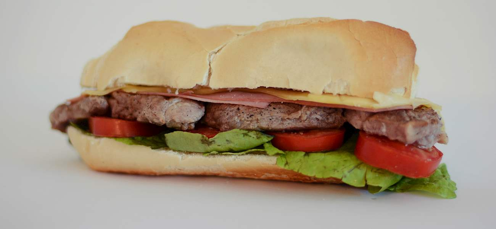

Sandwich de lomo

Description
This is an extreme version of a steak sandwich – filled with thinly sliced lomo steak,
tomatoes, onions, lettuce, mayonnaise, chimichurri sauce, ham, cheese, and a fried egg,
sandwich de lomo or lomito is a behemoth of a sandwich that is sure to satiate even the hungriest consumers.
Popular both in Argentina and Uruguay, it can easily be found at numerous street carts
dispersed throughout the metropolitan areas of both countries.
Ingredients
- 2 (4 oz.) filet mignon steaks, sliced ¼-inch thick
- Salt and freshly ground black pepper, to taste
- 4 slices mild cheese such as American
- 2 fried eggs
- 2 large rolls, sliced
- 4 lettuce leaves
- 1 small tomato, sliced
- Mayonnaise, to taste
Steps
- Season the filet mignon steaks with salt and pepper on both sides.
- In a greased skillet or on a griddle, cook the steaks over medium heat for 5 minutes on each side or to desired degree of doneness.
- Before removing the steaks from the skillet, place the slices of ham and cheese on top of the beef to warm them
- Remove the steaks from the pan and allow them to rest while you prepare the fried eggs.
- To serve, place the steak with the ham and cheese on the bottom of the roll.
- Top with fried egg, lettuce, tomato, and the other half of the roll, smeared generously with mayonnaise.